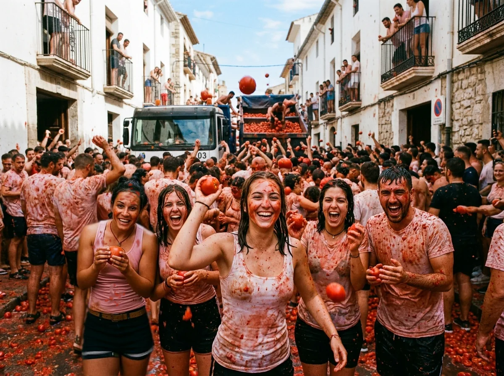

La Tomatina: The World's Messiest Festival

Imagine walking through a quiet Spanish town when suddenly, a truck arrives carrying thousands of ripe tomatoes. A few minutes later, the streets are covered in red, people are laughing and shouting, and everyone is throwing tomatoes at everyone else. This is La Tomatina, one of the strangest and most exciting festivals in the world.
La Tomatina takes place every year in Buñol, a small town near Valencia, Spain. It is held on the last Wednesday of August and attracts thousands of people from Spain and other countries. There were 20,000 people at its last event. The main event lasts only about one hour, but it creates an enormous mess. Trucks bring in tons of overripe tomatoes, and when the signal is given, the tomato fight begins.
Nobody comes to La Tomatina to win. There are no teams, no scores, and no prizes. The goal is simply to have fun. People wear old clothes, protect their eyes with goggles, and prepare themselves to become completely covered in tomato juice.
I had heard about La Tomatina for years, but I never imagined I would actually take part. When I arrived in Buñol, the town was already full of excited visitors. Music was playing in the streets, people were dancing, and everyone seemed to be waiting for something crazy to happen.
Then I heard a loud noise. A truck slowly moved through the crowd, loaded with huge piles of tomatoes. People started cheering. I could feel the excitement building around me. Suddenly, the signal was given. The first tomato hit me in the thigh.
Before I could react, another one flew past my face. Then another hit me on the back. Within seconds, tomatoes were flying in every direction. I reached for one on the ground, picked it up, and threw it at a complete stranger. He laughed and threw two tomatoes straight back at me.
Soon, I was completely caught up in the madness. I threw tomatoes at people I had never met, and they threw them back at me. Some people were dancing in the middle of the street, while others were using their hands to scoop up tomatoes and throw them like snowballs. The strangest part was how quickly everyone became friends. Language didn't seem to matter. We were all covered in red, laughing, shouting, and enjoying the same crazy experience.
Then, just as suddenly as it had started, it was over. I looked around and could hardly recognize the street. Everything was red. My clothes were covered in tomato pulp, my shoes were slippery, and there was tomato juice running down my arms. I was exhausted—but I couldn't stop smiling.
Afterward, the streets were washed with water, and the town slowly returned to normal. As I walked away, I realized that La Tomatina was much more than a food fight. It was an unforgettable experience that reminded me that sometimes it's good to forget about being serious, get a little messy, and simply have fun.